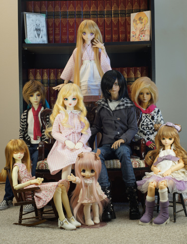
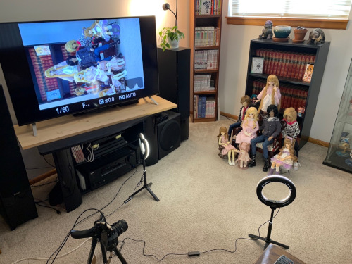
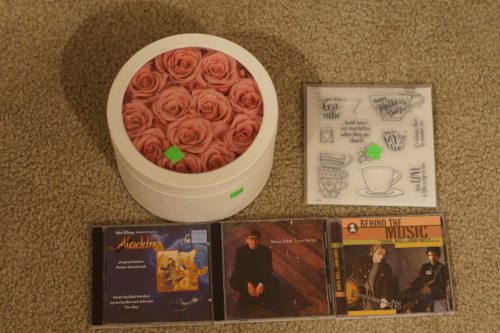

I tried using the Powershot and everything looks fine on the tiny little screen but NOTHING is in focus most of the time! how did we live like this??

i took hina's eyes out the other day. i put her head in the freezer for 10 minutes, tried pushing the eyes inward, got too scared, then tried lifting the glue with tweezers from the inside. after the glue was loosened a bit, it wasn't difficult to get the eyes out by pushing on her iris/pupil with a wooden stick. i still havent been able to get her headplate off so i might just wait for it to come off naturally
i swapped her eyes with sochi. i like the brighter ones but they really dont have much detail. i gotta get my b*tt around to ordering some nicer ones but i havent decided on a pair yet. i cant decide if i should go straight for a $100 pair or try a $20 pair first.
i wanted to take a family portait when hina arrived and I had time this morning. shooting 2 dolls is tough but shooting 8? ouch. all their hair needed attention and you can never get them looking in the same spot.
i ended up at f/11 to get all their faces reasonably focused, but my ring lights werent bright enough to bring my ISO under 2500, so I was a little frustrated with the grain. luckily i remembered i could just do a longer exposure since I was already using a tripod. duh!!
im glad im at a point where all my dolls have wigs and shoes. except kiki whose shoes i forgot at my mom's house!!!!! how embarrassing to have a shoeless doll in my family portrait... my mom says the girls all need to be wearing pink next time and the boys need to be similarly colored as well. she's right and i gotta get on it!!
we (really just me) also have a good mix of japanese and korean dolls. I'm surprised I have it at half and half in my house.
and a small thrift store haul:
these are not even remotely useful at all but i couldnt get them out of my head after leaving them last week. idk what kind of awful chemicals they used to treat them, but they are so pretty
ryan already had it! argh....
Ryan did not have it! thankfully!
it's a 2002 CD so i'm not expecting anything great from it